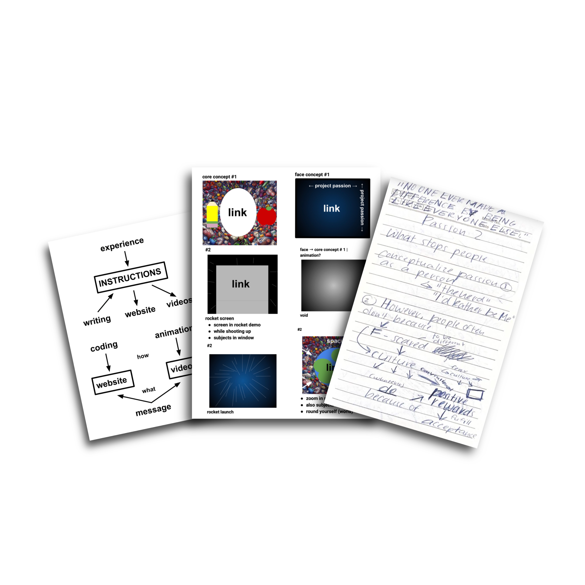
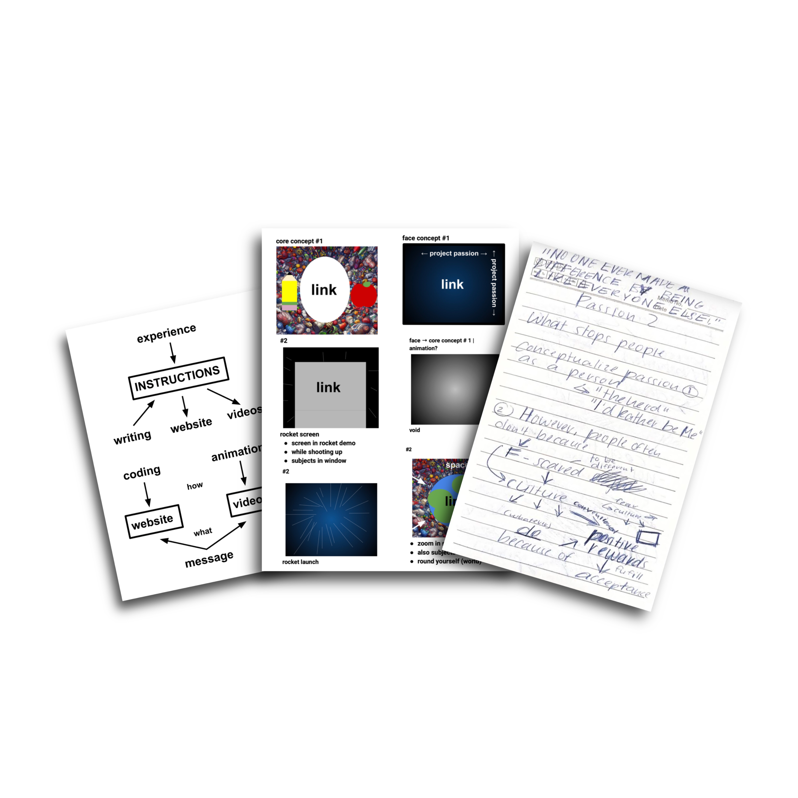

Writing
Visuals
Sketches
Gallery of Thoughts
There's passion in human thought.
A media arts portfolio grouped into ‘Visuals,’
‘Writings,’ and ‘Sketches,’ showcasing the art
of creativity. From graphics to poems to animations
to diagrams, art takes on an array of forms that
give form to a vision.